Roaa Gabreel Law Firm
Clarity and counsel for every legal step.
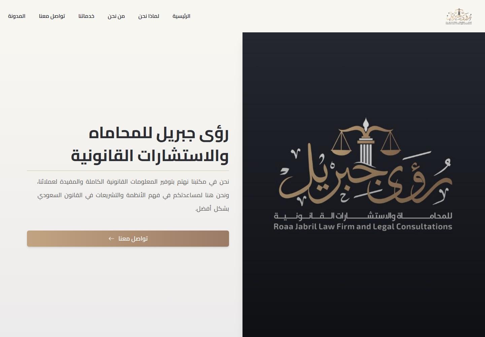
WHAT IT IS
Law firm and legal consultancy
A public Arabic-language site presenting a Saudi-focused law practice, its stated legal services, and ways to contact or request service. It describes help for individuals and companies and routes service-request calls to WhatsApp.
This case study documents what the linked website presents. Individual contribution to this project has not been confirmed.
WHAT THE WEBSITE OFFERS
- Arabic right-to-left navigation links to Home, Why Us, About, Services, Contact, and Blog pages.
- Service listings cover estate administration, legal pleadings, debt collection, enforcement of judgments and instruments, legal consultations, contract drafting, and litigation.
- Service cards provide explanatory copy; some enumerate scope such as estate identification, court procedures, debt settlement, inheritance distribution, and document preparation.
- Each visible service-request button links to the same WhatsApp number (wa.me/966505694485).
- The site provides an About section describing the office as serving individuals and companies and presenting its professional purpose.
- Contact page visibly offers a form with full name, phone number, email, and message fields plus a Send button; form was not submitted.
- Contact links are visible for WhatsApp, email (Roaa22619k@gmail.com), and Snapchat.
- About/home copy states an office location in Jazan on King Fahd Road opposite STC and says it serves all regions of Saudi Arabia.
VISITOR JOURNEY
Navigate between Home, Why Us, About, Services, Contact, and Blog using the header links.
AUTHENTIC SCREEN CAPTURES · 11
Inside the experience.
Genuine, distinct screen captures supplied for this project. No screenshots have been fabricated or duplicated.
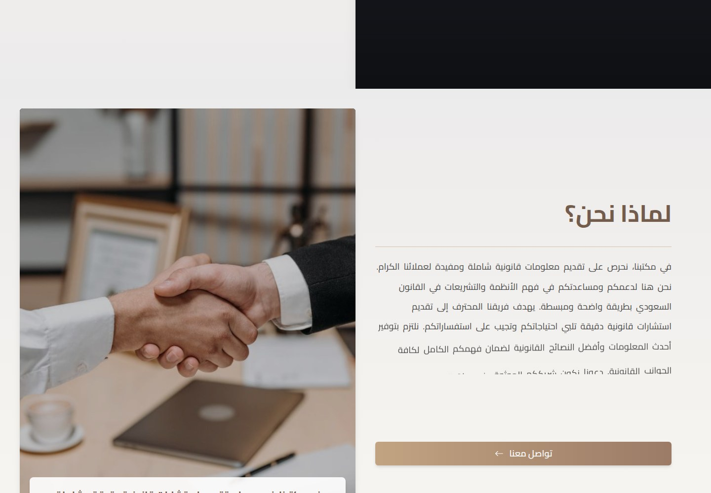
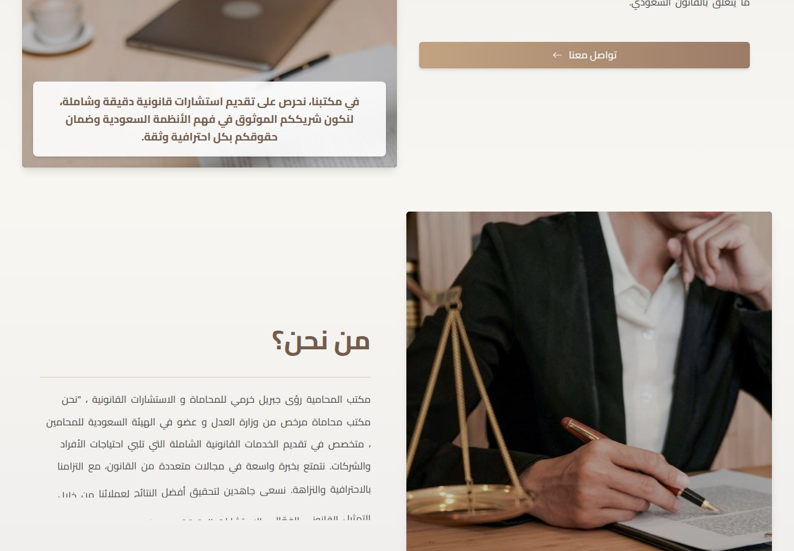
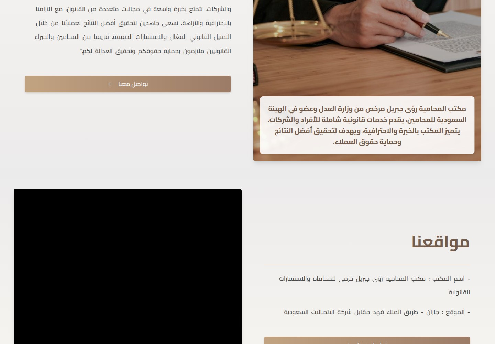
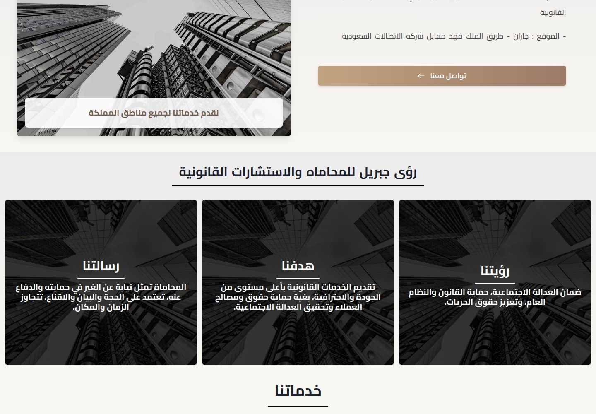
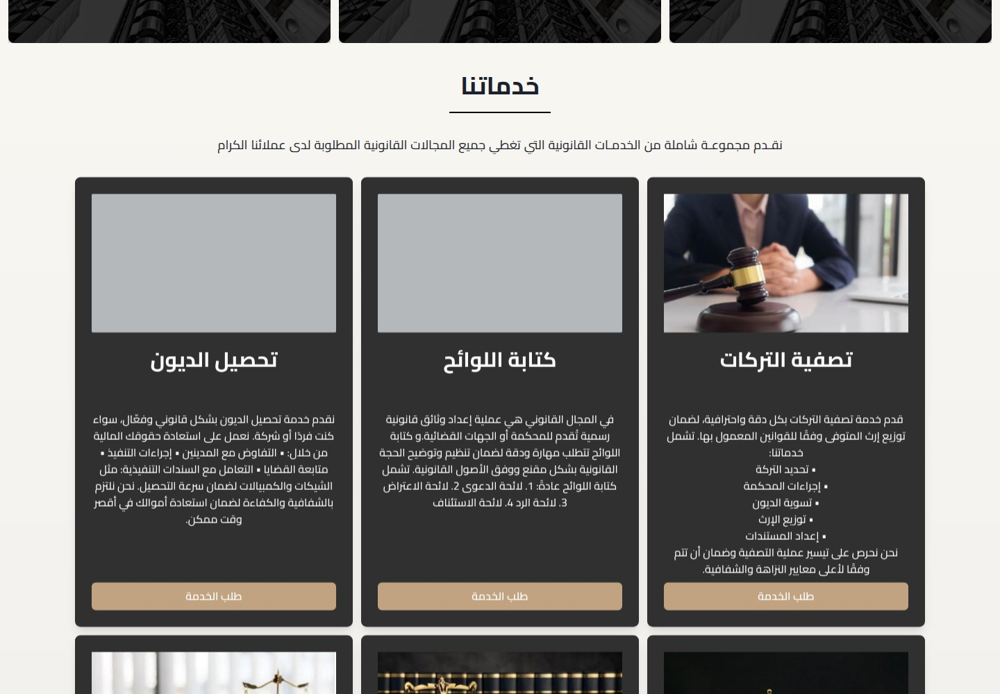
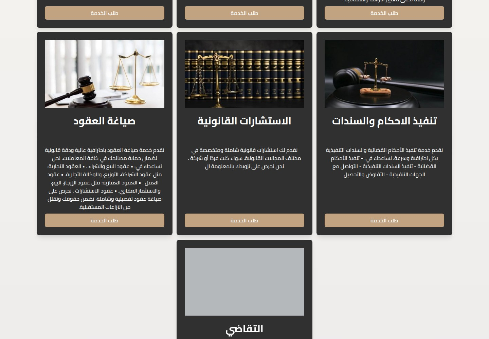
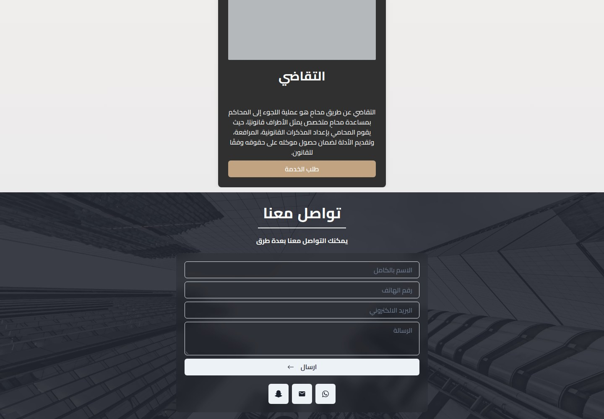
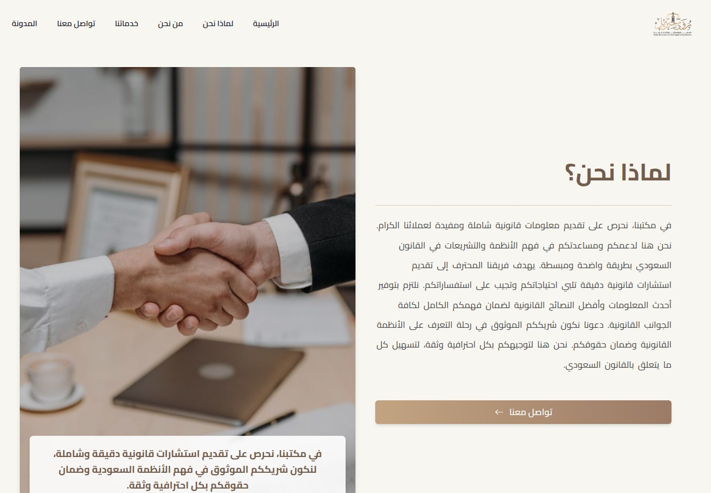
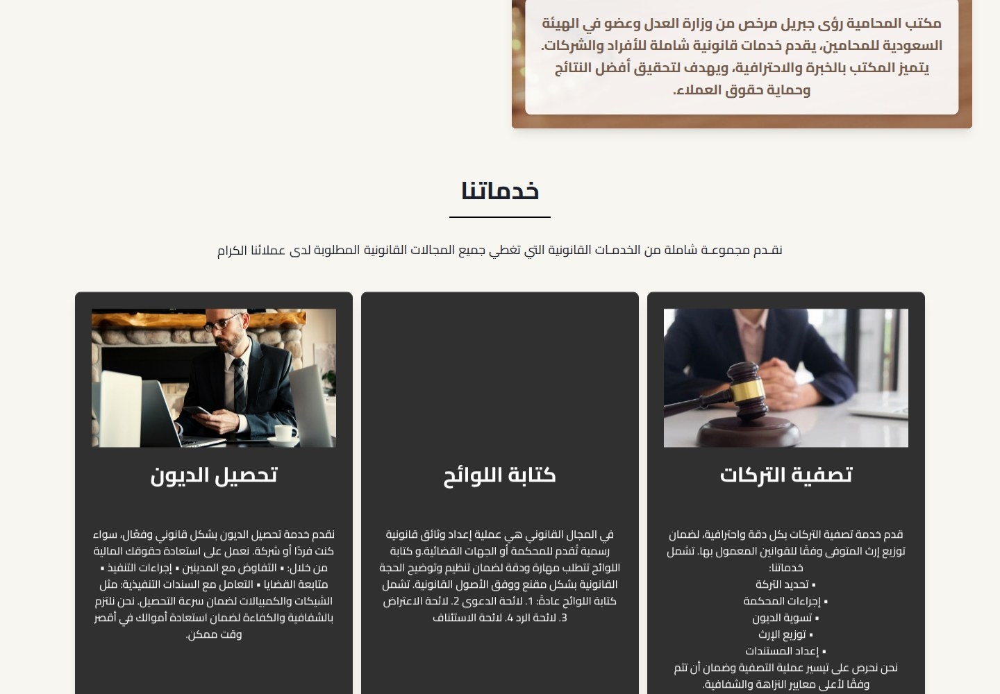
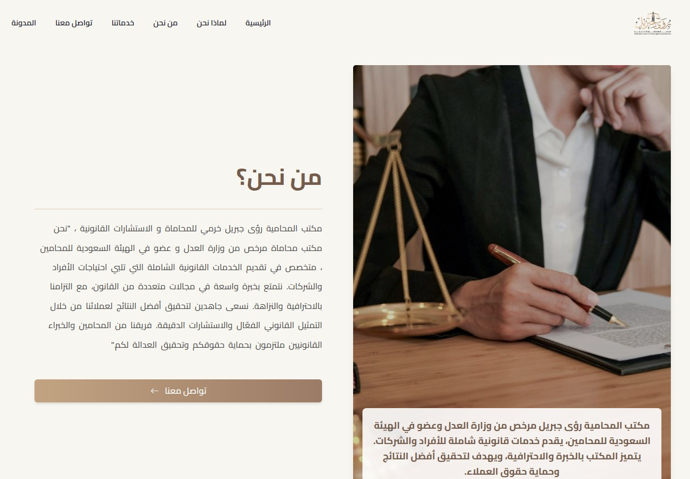